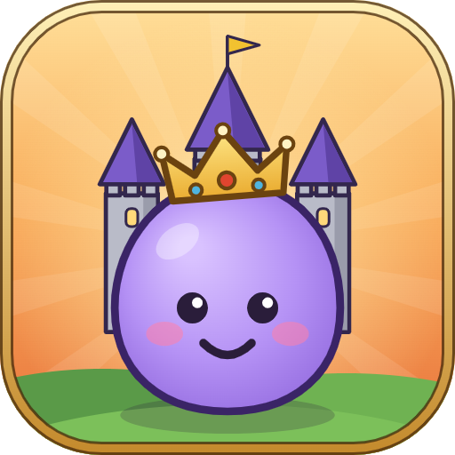

Tuzuland – Delete your account
Tuzuland is published by Nexly GO. You can delete your account, and the data linked to it, in two ways.
In the game
- Open Tuzuland and tap Account (on the title screen, or in Settings).
- Tap Delete account, at the bottom.
- Confirm with Delete forever.
Without the game
Write to info@tuzu.my from the email address of your account and ask to delete it. We do it within 30 days.
What is deleted
- Your account: email address, sign-in data and user number.
- Your village saved in the cloud.
- Your village in the online world: name, alliance membership, results and reports.
- Because it is the same Tuzu account, your data in the other Tuzu services is deleted too.
Nothing is kept afterwards. The village saved on your own device stays there until you delete the game or its data. If you play as a guest, there is no account and nothing to delete on our side.
More: privacy policy.
Cancellare l'account
Tuzuland è pubblicato da Nexly GO. Puoi cancellare l'account, e i dati collegati, in due modi.
Dal gioco: apri Tuzuland, tocca Account (sul titolo o nelle Impostazioni), poi Cancella account in fondo e conferma con Cancella per sempre.
Senza il gioco: scrivi a info@tuzu.my dall'indirizzo email dell'account e chiedi di cancellarlo. Lo facciamo entro 30 giorni.
Che cosa si cancella: l'account (email, dati di accesso, numero utente), il villaggio salvato nel cloud, il villaggio nel mondo online (nome, alleanza, risultati e rapporti) e, dato che l'account Tuzu è lo stesso, anche i tuoi dati negli altri servizi Tuzu. Dopo non conserviamo niente. Il villaggio salvato sul tuo dispositivo resta lì finché non cancelli il gioco o i suoi dati. Se giochi come ospite non c'è nessun account e da noi non c'è niente da cancellare.
Di più: informativa sulla privacy.